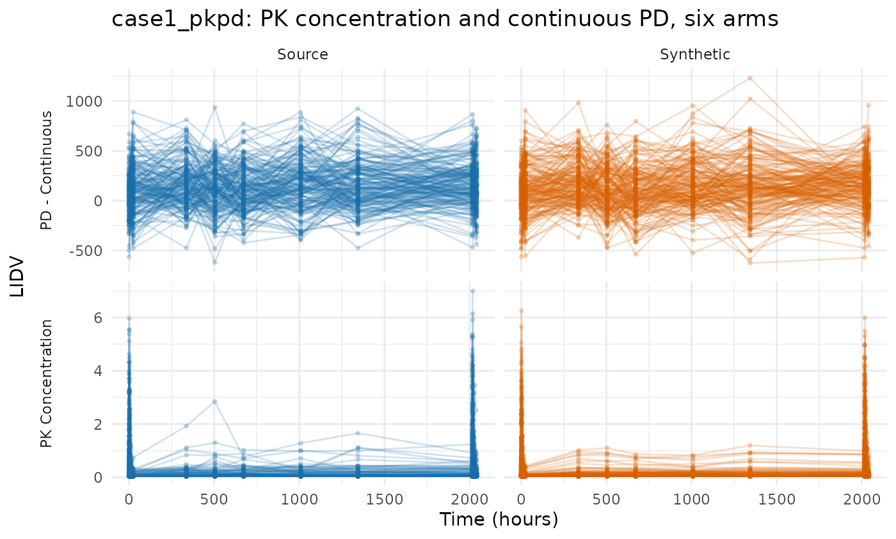
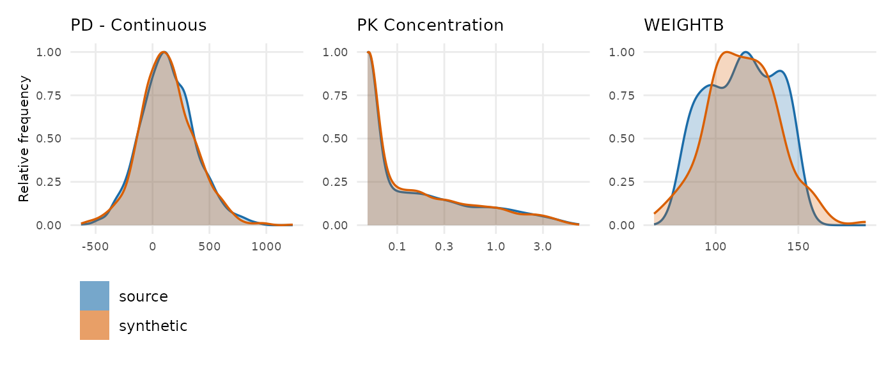
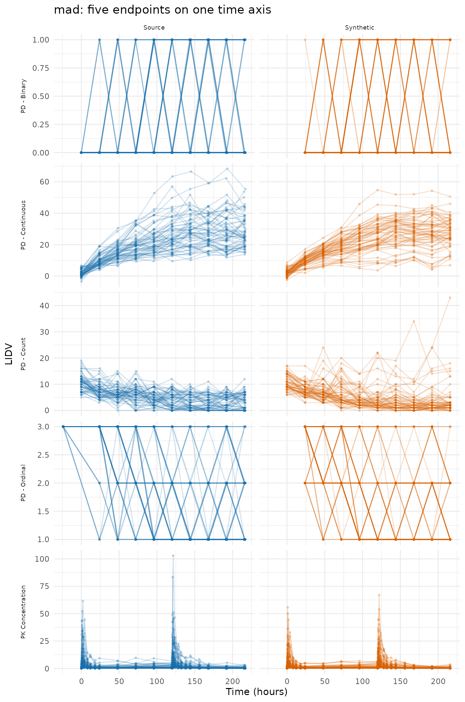
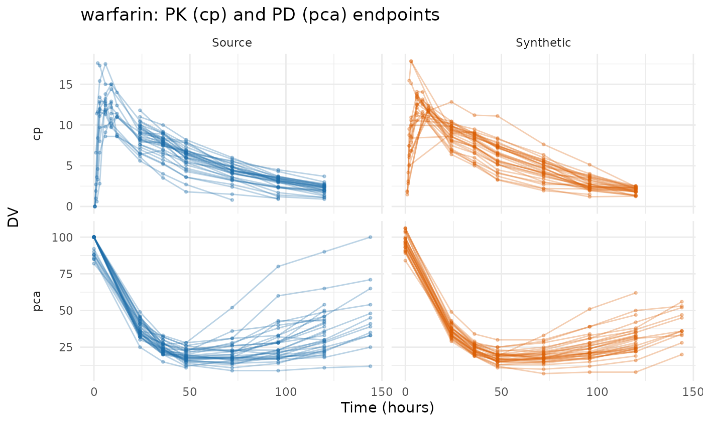
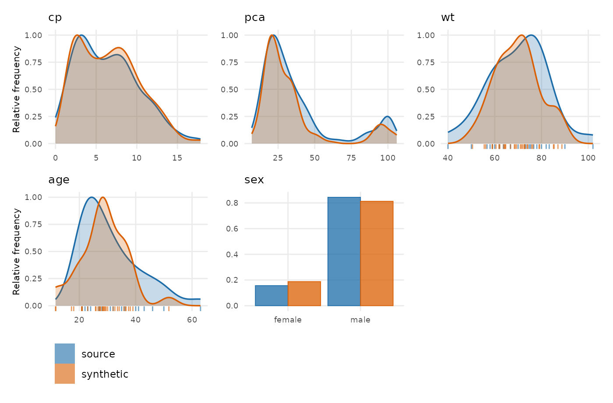
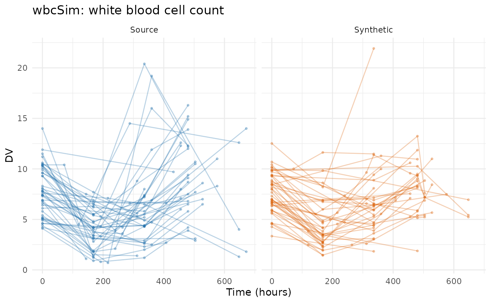
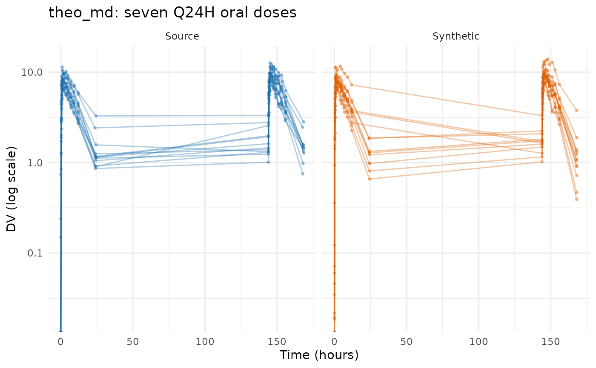
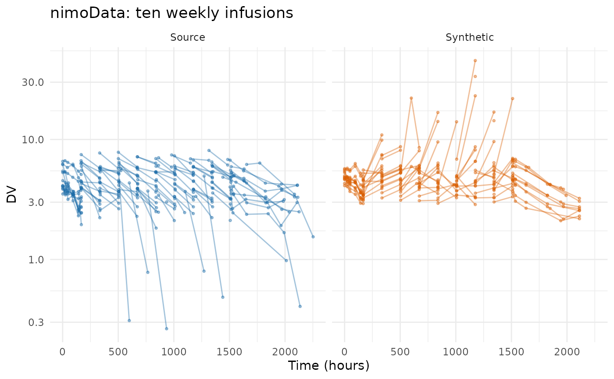
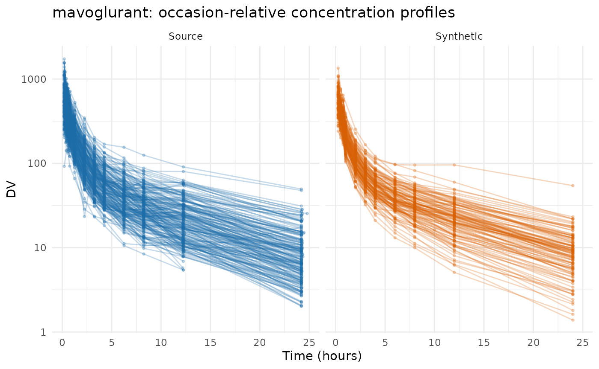

Evaluating PCA on public data
Andrew Stein
Source:vignettes/articles/pca-public-data-examples.Rmd
pca-public-data-examples.RmdThis article runs synpmx_pca() over the same eight
public datasets that Evaluating
AVATAR on public data runs synpmx_avatar() over, so the
two generators can be read against each other on identical studies.
The eight split three ways, and the split is the finding rather than
a presentational choice. synpmx_pca() builds every feature
on a declared nominal grid and refuses without one, so what
separates these datasets is where that grid comes from. Two
ship it: case1_pkpd and mad carry a
NOMTIME column. Five can supply it — warfarin
and wbcSim because their recorded observation times already
are the protocol’s, and theo_md, nimoData and
mavoglurant because the protocol can be written down from
the dose times, the declared occasion, or an occasion-relative clock.
One cannot: pheno_sd is routine neonatal care with no
protocol behind it, and the generator refuses.
Seven runs follow, then three cross-dataset tables and one finding — the copy check that fails on two of the seven, and what it does and does not mean.
Plotting and reporting helpers used throughout this vignette
# Observation rows only, source beside synthetic on a shared y axis, one row per
# endpoint. The same shape as the AVATAR vignette's figure, reduced to what the
# PCA output needs: this generator writes onto a nominal grid, so there is no
# time-after-dose view to switch to.
overlay_plot <- function(source, synthetic, roles, title,
y_label = "DV", log_y = FALSE, alpha = 0.3,
max_time = Inf) {
frame <- function(data, label) {
observed <- as.character(data[[roles$evid]]) %in% c("0", "0.0") &
!is.na(data[[roles$dv]])
if (!is.null(roles$mdv)) {
observed <- observed & as.character(data[[roles$mdv]]) %in% c("0", "0.0")
}
observed <- observed & as.numeric(data[[roles$time]]) <= max_time
data.frame(
dataset = factor(label, levels = c("Source", "Synthetic")),
subject = as.character(data[[roles$id]][observed]),
# A study whose clock resets inside an occasion needs one line per
# occasion; joining them draws a line from the end of the first period
# back to the start of the second.
occasion = if (is.null(roles$occasion)) "1" else
as.character(data[[roles$occasion]][observed]),
time = as.numeric(data[[roles$time]][observed]),
dv = as.numeric(data[[roles$dv]][observed]),
endpoint = if (is.null(roles$dvid)) "DV" else
as.character(data[[roles$dvid]][observed]),
stringsAsFactors = FALSE
)
}
plotted <- rbind(frame(source, "Source"), frame(synthetic, "Synthetic"))
figure <- ggplot2::ggplot(
plotted,
ggplot2::aes(time, dv,
group = interaction(dataset, subject, occasion),
colour = dataset)
) +
ggplot2::geom_line(alpha = alpha) +
ggplot2::geom_point(alpha = alpha, size = 0.7) +
# Endpoint down the side, source and synthetic across, so each endpoint has
# its own y scale while source and synthetic share one. The transpose lets
# the two panels drift onto different axes and squeezes every endpoint onto
# a single scale, which is the arrangement the eye cannot compare.
(if (length(unique(plotted$endpoint)) > 1L) {
ggplot2::facet_grid(endpoint ~ dataset, scales = "free_y", switch = "y")
} else {
ggplot2::facet_wrap(~dataset)
}) +
ggplot2::scale_colour_manual(values = comparison_colours) +
ggplot2::labs(x = "Time (hours)", y = y_label, title = title) +
ggplot2::theme_minimal() +
ggplot2::theme(legend.position = "none", strip.placement = "outside")
if (isTRUE(log_y)) figure + ggplot2::scale_y_log10() else figure
}
overlay_height <- function(data, roles, per_endpoint = 2.2, minimum = 3.4) {
observed <- as.character(data[[roles$evid]]) %in% c("0", "0.0")
endpoints <- if (is.null(roles$dvid)) 1L else
length(unique(data[[roles$dvid]][observed]))
max(minimum, per_endpoint * endpoints)
}
# Every dataset is run the same way and its numbers collected in one place, so
# the cross-dataset tables at the end cannot drift from the sections above them.
runs <- list()
pca_run <- function(label, source, roles, seed) {
summary <- synpmx_pca_summarize(source, roles, seed = seed)
synthetic <- synpmx_pca_generate(summary, seed = seed)
runs[[label]] <<- list(label = label, source = source, roles = roles,
summary = summary, synthetic = synthetic,
card = synpmx_scorecard(source, synthetic, roles))
invisible(runs[[label]])
}
# Nearest-neighbour snapping onto a stated design grid. Used where a study's
# recorded times have to be placed on the protocol's planned ones; which grid to
# snap to is a statement about the study and is written out at each call.
snap_to <- function(x, grid) {
grid[max.col(-abs(outer(x, grid, "-")), ties.method = "first")]
}The datasets
Every dataset here is public package data from
nlmixr2data or xgxr, both
Suggests of this package. The last column is what this
vignette is about.
| Dataset | Package | Patients | Endpoints | Where its nominal grid comes from |
|---|---|---|---|---|
case1_pkpd |
xgxr | 180 | 2 | Declared. Ships a NOMTIME column |
mad |
xgxr | 60 | 5 | Declared. Ships a NOMTIME column |
warfarin |
nlmixr2data | 32 | 2 | Already on it. Its 16 observation times are the protocol’s |
wbcSim |
nlmixr2data | 45 | 1 | Already on it, apart from a few extended-follow-up patients |
theo_md |
nlmixr2data | 12 | 1 | Constructed from the Q24H dose times and a design grid |
nimoData |
nlmixr2data | 12 | 1 | Constructed from the declared occasion and time after dose |
mavoglurant |
nlmixr2data | 120 | 1 | Constructed by snapping an occasion-relative clock |
pheno_sd |
nlmixr2data | 59 | 1 | None. Routine care, individualised dosing — refused |
Shared workflow
Every example follows the same five steps:
- declare the column meanings with
pmx_roles(), includingnominal_time; - summarize with
synpmx_pca_summarize()and generate withsynpmx_pca_generate(); - plot the real and synthetic data;
- plot the observation and baseline covariate distributions, source against synthetic;
- report the scorecard.
Three scorecard rows read not applicable on every card
below — B1a, B1b and
C2 — because they read a run record that
synpmx_avatar() writes and this generator does not. That is
a limitation of those three rows rather than a property of any dataset
here, and it is the same on all seven. B4a and
B4b ask the copy question directly on the finished
tables and are the rows that carry the claim; the section at the end
reports what they found.
The nominal grid is the requirement
synpmx_pca() places dose rows and observation rows on
the same declared grid, and every feature it models is a cell on it. A
grid inferred from elapsed time puts a sample on the wrong side of a
dose as soon as doses were recorded as actuals, and deciding where a
trough belongs is a statement about the protocol rather than something
an algorithm can derive. So the function refuses without
nominal_time instead of guessing:
data("pheno_sd", package = "nlmixr2data")
pheno_roles <- pmx_roles(
id = "ID", time = "TIME", dv = "DV", amt = "AMT", evid = "EVID",
mdv = "MDV", covariates = c("WT", "APGR")
)
synpmx_pca_summarize(pheno_sd, pheno_roles, seed = 111)
#> Error:
#> ! `synpmx_pca()` requires `nominal_time` in `pmx_roles()`. The nominal grid is the axis every feature sits on, and inferring it from recorded times is a statement about the protocol that only you can make. Add the protocol's planned times as a column and declare it.This is the sharpest difference between the two generators.
synpmx_avatar() derives a grid from the recorded times when
none is declared, and on pheno_sd that derivation does real
work. synpmx_pca() has no such fallback, and the seven runs
below are the seven studies where a grid could honestly be supplied.
case1_pkpd: a declared nominal grid
180 patients across six treatment arms, two endpoints keyed by a
character NAME column, a baseline weight and a
CENS column. The industry shape, and the one the generator
is easiest on.
case1_pkpd <- as.data.frame(
get(utils::data(list = "case1_pkpd", package = "xgxr"))
)
# That study's CENS is meaningful only for PK: the PD effect is signed, so a
# left-censored PD row would report a value above the uncensored ones.
case1_pkpd$CENS <- ifelse(case1_pkpd$NAME == "PD - Continuous", 0,
case1_pkpd$CENS)
case1_roles <- pmx_roles(
id = "ID", time = "TIME", dv = "LIDV", cens = "CENS", amt = "AMT",
evid = "EVID", cmt = "CMT", dvid = "NAME", nominal_time = "NOMTIME",
strata = c("TRTACT", "DOSE"), covariates = "WEIGHTB", keep = "STUDY"
)
case1 <- pca_run("case1_pkpd", case1_pkpd, case1_roles, seed = 808)
compare_pmx_distributions(case1$source, case1$synthetic, case1_roles)
synpmx_scorecard_datatable(case1$card)Nothing fails. The figure above is on a linear axis over the whole study, which is the structural view: both endpoints present, on the same ranges, over the same 2040 hours. It is the wrong axis for reading a PK concentration, and the censoring behaviour it cannot show is worth a number instead — the fraction of PK observations reported at the assay limit, per arm:
blq_share <- function(data, label) {
rows <- data$EVID == 0 & data$NAME == "PK Concentration" & !is.na(data$LIDV)
out <- aggregate(list(pct = data$CENS[rows] == 1),
list(arm = data$TRTACT[rows]),
function(x) round(100 * mean(x)))
stats::setNames(out, c("arm", label))
}
knitr::kable(
merge(blq_share(case1$source, "source_pct_blq"),
blq_share(case1$synthetic, "synthetic_pct_blq"), by = "arm"),
caption = "Percentage of PK observations below the limit of quantification."
)| arm | source_pct_blq | synthetic_pct_blq |
|---|---|---|
| 10 mg | 70 | 66 |
| 100 mg | 11 | 11 |
| 3 mg | 95 | 91 |
| 30 mg | 50 | 39 |
| 300 mg | 6 | 4 |
The censored share tracks the source arm by arm — within a few points
on four of the five arms, and 50% against 39% on the 30 mg arm, which is
the one sitting nearest the limit and so the one a small shift in the
drawn values moves most. That is the assay limit being reapplied at
emit: the drawn value is the latent one, and where the source declared a
lower limit of quantification the reported value and CENS
are rebuilt from it together. vignette("pca-demo") shows
the same thing as a log-scale figure over the day-1 and last-dose
windows.
A5a reads review: 30.7 observations per patient in the
source against 29 in the synthetic cohort. Attendance is drawn
independently per visit from the arm’s probability, so the count is
right on average and not exactly.
mad: five endpoints, including ordinal, count and binary
60 subjects in a multiple-ascending-dose study with a declared
NOMTIME and five endpoints — PK concentration, continuous
PD, and ordinal, count and binary PD. An endpoint silently vanishing
during generation is invisible with fewer than three, which is what this
dataset is here to catch.
mad <- as.data.frame(get(utils::data(list = "mad", package = "xgxr")))
mad_roles <- pmx_roles(
id = "ID", time = "TIME", dv = "LIDV", amt = "AMT", evid = "EVID",
cmt = "CMT", dvid = "NAME", mdv = "MDV", nominal_time = "NOMTIME",
strata = c("TRTACT", "DOSE"), covariates = c("WEIGHTB", "SEX")
)
mad_run <- pca_run("mad", mad, mad_roles, seed = 909)
synpmx_scorecard_datatable(mad_run$card)Nothing fails, and A3 reads 5 of 5: every endpoint survives. A6 is the check that the discrete endpoints kept their scale, and it reads the finished table rather than trusting the mechanism.
discrete <- c("PD - Binary", "PD - Count", "PD - Ordinal")
values_taken <- function(data, endpoint) {
values <- data$LIDV[data$NAME == endpoint & data$EVID == 0]
values <- values[!is.na(values)]
sprintf("%d distinct, %.2f to %.2f", length(unique(values)),
min(values), max(values))
}
knitr::kable(
data.frame(
endpoint = discrete,
source = vapply(discrete, values_taken, character(1), data = mad),
synthetic = vapply(discrete, values_taken, character(1),
data = mad_run$synthetic),
row.names = NULL
),
caption = "Values taken by the three discrete endpoints."
)| endpoint | source | synthetic |
|---|---|---|
| PD - Binary | 2 distinct, 0.00 to 1.00 | 2 distinct, 0.00 to 1.00 |
| PD - Count | 20 distinct, 0.00 to 19.00 | 25 distinct, 0.00 to 43.00 |
| PD - Ordinal | 3 distinct, 1.00 to 3.00 | 3 distinct, 1.00 to 3.00 |
A drawn feature is a real number, so without the snap a binary endpoint would come back as a spread of values around zero and one. Step 7 puts each drawn value back onto the source’s level set, and the cost is stated rather than hidden: a generated value for a discrete endpoint is a source value, because a 0/1 endpoint has no third value to emit.
warfarin: the observation times are already the protocol’s
32 subjects, a single dose, a PK endpoint (cp) and a PD
one (pca) on different time courses. Its 515 rows carry
only 16 distinct observation times — 0.5, 1, 1.5, 2, 3, 6, 9, 12, 24,
36, 48, 72, 96, 120, 144 and a baseline — which is a protocol grid
already written down.
data("warfarin", package = "nlmixr2data")
warfarin <- as.data.frame(warfarin)
sort(unique(warfarin$time[warfarin$evid == 0]))
#> [1] 0.0 0.5 1.0 1.5 2.0 3.0 6.0 9.0 12.0 24.0 36.0 48.0
#> [13] 72.0 96.0 120.0 144.0Declaring nominal_time is then a statement that these
recorded times are the planned ones, which for this study is
true. No arithmetic is involved, and that is the point: the column is a
declaration, not a derivation.
warfarin$ntime <- warfarin$time
warfarin_roles <- pmx_roles(
id = "id", time = "time", nominal_time = "ntime", dv = "dv", amt = "amt",
evid = "evid", dvid = "dvid", covariates = c("wt", "age", "sex")
)
warfarin_run <- pca_run("warfarin", warfarin, warfarin_roles, seed = 404)
compare_pmx_distributions(warfarin_run$source, warfarin_run$synthetic,
warfarin_roles)
synpmx_scorecard_datatable(warfarin_run$card)B4a fails here, and it is the first of the two datasets that does. One generated subject’s complete list of observation times equals a real patient’s that no other patient shares. The section “What B4a found” below is what that does and does not mean; it is a finding about the visit draw rather than about this study.
wbcSim: infusions and a delayed response
45 subjects with infusion start/stop pairs and a delayed white-blood-cell decline, nadir and recovery. Its observation times are a grid too, apart from a few patients followed far longer than the rest.
data("wbcSim", package = "nlmixr2data")
wbcSim <- as.data.frame(wbcSim)
wbcSim$NTIME <- wbcSim$TIME
wbc_roles <- pmx_roles(
id = "ID", time = "TIME", nominal_time = "NTIME", dv = "DV", amt = "AMT",
evid = "EVID", cmt = "CMT", rate = "RATE"
)
wbc_run <- pca_run("wbcSim", wbcSim, wbc_roles, seed = 505)
synpmx_scorecard_datatable(wbc_run$card)The figure is cut at 700 h because a handful of source patients are
followed to 4580 h and the rest are not. Those late visits are exactly
what the column guard removes: a grid cell fewer than
min_column_patients patients reached describes those
patients and nobody else, so it is dropped rather than modelled.
features <- as.data.frame(pca_features(wbc_run$summary))
c(source_times = length(unique(wbcSim$TIME[wbcSim$EVID == 0])),
modelled_cells = sum(features$kind == "endpoint_cell"),
last_modelled = max(features$time, na.rm = TRUE))
#> source_times modelled_cells last_modelled
#> 38 21 648A5a and A5b read review for the same reason: dropping
the long tail shortens both the observation record and the dosing.
This is the cost of the guard rather than a defect, and
it is the number to judge — a study whose late follow-up matters is one
to run at a lower min_column_patients and re-read this row.
B4a fails here too, on four vectors, and is treated below.
theo_md: seven oral doses on a constructible grid
12 subjects, seven doses exactly 24 h apart, with dense concentration sampling around the first and last dose. The doses are on a clean grid and the samples are not, so the grid can be written down: the dose interval a sample falls in, plus its time after that dose snapped to the design times.
data("theo_md", package = "nlmixr2data")
theo_md <- as.data.frame(theo_md)
sort(unique(theo_md$TIME[theo_md$EVID != 0]))
#> [1] 0 24 48 72 96 120 144
theo_doses <- seq(0, 144, by = 24) # the protocol's Q24H schedule
theo_design <- c(0, 0.25, 0.5, 1, 2, 3, 4, 5, 7, 9, 12, 24) # planned samples
occasion <- pmax(1L, findInterval(theo_md$TIME, theo_doses))
theo_md$NTIME <- ifelse(
theo_md$EVID == 0,
theo_doses[occasion] +
snap_to(theo_md$TIME - theo_doses[occasion], theo_design),
theo_md$TIME
)
c(recorded_times = length(unique(theo_md$TIME[theo_md$EVID == 0])),
nominal_times = length(unique(theo_md$NTIME[theo_md$EVID == 0])))
#> recorded_times nominal_times
#> 156 26156 recorded times become 26 nominal ones. The design grid above is a statement about the study — it says which samples the protocol planned — and it is written in the dataset where a reader can check it rather than inside a function they cannot.
theo_roles <- pmx_roles(
id = "ID", time = "TIME", nominal_time = "NTIME", dv = "DV", amt = "AMT",
evid = "EVID", cmt = "CMT", covariates = "WT"
)
theo_run <- pca_run("theo_md", theo_md, theo_roles, seed = 303)
synpmx_scorecard_datatable(theo_run$card)Nothing fails, on twelve subjects. The cap holds the basis to two components here — a fifth of the cohort — which is what stops a basis fitted on that few subjects from interpolating them.
c(subjects = theo_run$summary$n_source,
components = theo_run$summary$basis$k,
features = length(theo_run$summary$basis$columns))
#> subjects components features
#> 12 2 27Two components against 27 features is the honest reading of twelve patients, and it is why the synthetic profiles are visibly smoother than the source ones.
nimoData: ten infusions recorded at the times they happened
12 subjects, ten roughly weekly infusions, with the dose times recorded as actuals — 165.70, 167.24 and 168.05 for what the protocol called one weekly visit. The dataset declares an occasion and a time after dose, so the protocol can be written down from what it records. This is the construction worked out in the AVATAR evaluation, reused unchanged.
data("nimoData", package = "nlmixr2data")
nimoData <- as.data.frame(nimoData)
nimo_interval <- 168 # the protocol's weekly infusion
last_occasion <- ave(nimoData$OCC, nimoData$ID, FUN = max)
nominal_tad <- round(nimoData$TAD / 24) * 24
# A sample at the end of its interval is the NEXT infusion's pre-dose trough,
# not that infusion's time-zero sample. Only where another infusion follows:
# after the last one, a long time after dose is real follow-up.
pre_dose <- nimoData$EVID == 0 & nominal_tad >= nimo_interval &
nimoData$OCC < last_occasion
nominal_tad[pre_dose] <- nimo_interval - 1
nimoData$NTIME <- (nimoData$OCC - 1) * nimo_interval +
ifelse(nimoData$EVID == 0, nominal_tad, 0)The trough is the decision the arithmetic will not make. Rounding time after dose to the nearest day would send a sample drawn just before the next infusion onto that infusion’s own nominal time, where it stops being a trough and becomes a time-zero sample; the line above gives it a slot of its own instead.
nimo_roles <- pmx_roles(
id = "ID", time = "TIME", nominal_time = "NTIME", dv = "DV", amt = "AMT",
evid = "EVID", rate = "RATE", mdv = "MDV", tad = "TAD", occasion = "OCC",
covariates = c("BSA", "AGE", "HGT"), keep = "DOS"
)
nimo_run <- pca_run("nimoData", nimoData, nimo_roles, seed = 606)#> Warning in transformation$transform(x): NaNs produced
#> Warning in ggplot2::scale_y_log10(): log-10 transformation
#> introduced infinite values.
#> Warning in transformation$transform(x): NaNs produced
#> Warning in ggplot2::scale_y_log10(): log-10 transformation
#> introduced infinite values.
#> Warning: Removed 1 row containing missing values or values outside the scale range
#> (`geom_line()`).
#> Warning: Removed 1 row containing missing values or values outside the scale range
#> (`geom_point()`).
synpmx_scorecard_datatable(nimo_run$card)The dosing comes through in full, which is the contrast worth drawing with the AVATAR run on this study. There, reaching the B1b guarantee cost the dosing: 10 doses per patient became 1.6, and every avatar’s course was truncated. Here the doses are the arm’s planned schedule and every generated patient receives all ten of them.
knitr::kable(pca_dosing(nimo_run$summary),
caption = "The planned schedule, which every generated patient receives.",
digits = 1)| arm | cycle | time | planned_amt |
|---|---|---|---|
| all | 1 | 0 | 100 |
| all | 2 | 168 | 100 |
| all | 3 | 336 | 100 |
| all | 4 | 504 | 100 |
| all | 5 | 672 | 100 |
| all | 6 | 840 | 100 |
| all | 7 | 1008 | 100 |
| all | 8 | 1176 | 100 |
| all | 9 | 1344 | 100 |
| all | 10 | 1512 | 100 |
The cost is on the other side and is stated in
vignette("pca-algorithm"): there is one
schedule where the source had twelve. C2 is the row that would say so,
and it is one of the three that cannot read this generator’s output.
pca_dosing() above is what to read in its place. B2 reads
review at 3 of 12 — the distinct visit sets that
survived.
mavoglurant: an occasion-reset clock
120 subjects in one- and two-period profiles, with TIME
resetting inside OCC so it is already dose-relative. There
is nothing to align, only a grid to snap to: 117 distinct recorded times
across the two periods against a protocol that planned a dozen or
so.
data("mavoglurant", package = "nlmixr2data")
mavoglurant <- as.data.frame(mavoglurant)
mavo_design <- c(0, 0.25, 0.5, 0.75, 1, 1.5, 2, 3, 4, 6, 8, 10, 12, 24, 36, 48)
mavoglurant$NTIME <- ifelse(mavoglurant$EVID == 0,
snap_to(mavoglurant$TIME, mavo_design),
mavoglurant$TIME)
mavo_roles <- pmx_roles(
id = "ID", time = "TIME", nominal_time = "NTIME", dv = "DV", amt = "AMT",
evid = "EVID", cmt = "CMT", rate = "RATE", mdv = "MDV", occasion = "OCC",
keep = "DOSE", covariates = c("AGE", "SEX", "WT", "HT")
)
mavo_run <- pca_run("mavoglurant", mavoglurant, mavo_roles, seed = 707)
synpmx_scorecard_datatable(mavo_run$card)This is the most expensive construction in the vignette, and A5a says so: 20.2 observations per patient in the source against 11.2 in the synthetic cohort. Snapping 117 distinct recorded times onto 15 nominal ones collapses several real samples into one cell, and a cell holds one value per subject.
c(source_rows = nrow(mavoglurant),
synthetic_rows = nrow(mavo_run$synthetic),
recorded_times = length(unique(mavoglurant$TIME[mavoglurant$EVID == 0])),
nominal_times = length(unique(mavoglurant$NTIME[mavoglurant$EVID == 0])))
#> source_rows synthetic_rows recorded_times nominal_times
#> 2678 1460 117 15That is a property of the grid supplied, not of the generator: a wider design grid keeps more of the samples, at the price of cells fewer patients share. It is the one dataset here where the construction is worth revisiting before using the output, and A5a is where a reader would notice.
pheno_sd: no protocol to write down
59 neonates on phenobarbital in routine care, with individualised dosing and sparse irregular sampling: 155 observations at 118 distinct times. There is no protocol grid because there was no protocol, and the refusal at the top of this vignette is the whole of this section.
c(observations = sum(pheno_sd$EVID == 0),
distinct_times = length(unique(pheno_sd$TIME[pheno_sd$EVID == 0])),
patients = length(unique(pheno_sd$ID)))
#> observations distinct_times patients
#> 155 118 59Snapping these onto a day grid would produce a column, and it would
be an invention rather than a declaration — nobody planned those visits,
so there are no planned times to recover. synpmx_avatar()
is the generator for this study; its derived grid does real work there,
and the AVATAR
evaluation runs it.
What the seven runs held
The trial summary is the whole of what leaves the source, so its size across seven studies is worth one table.
inventory <- do.call(rbind, lapply(runs, function(entry) {
report <- as.data.frame(pca_report(entry$summary))
basis <- entry$summary$basis
features <- as.data.frame(pca_features(entry$summary))
sparsest_cell <- min(features$patients, na.rm = TRUE)
data.frame(
Dataset = entry$label,
Patients = basis$n_source,
Arms = length(entry$summary$arms$arms),
Features = length(basis$columns),
Components = basis$k,
`Numbers held` = sum(report$numbers),
`Fewest patients` = min(report$min_patients, na.rm = TRUE),
`Set by` = if (sparsest_cell <= basis$min_group) "sparsest grid cell" else
"smallest arm",
check.names = FALSE, stringsAsFactors = FALSE
)
}))
knitr::kable(
inventory, row.names = FALSE,
caption = paste(
"What each run read out of its source. `Numbers held` is every quantity in",
"the trial summary; `Fewest patients` is the smallest number of patients",
"standing behind any one of them, and `Set by` names which quantity that is."
)
)| Dataset | Patients | Arms | Features | Components | Numbers held | Fewest patients | Set by |
|---|---|---|---|---|---|---|---|
| case1_pkpd | 180 | 6 | 34 | 11 | 1925 | 30 | smallest arm |
| mad | 60 | 6 | 67 | 12 | 1715 | 10 | smallest arm |
| warfarin | 32 | 1 | 25 | 6 | 292 | 5 | sparsest grid cell |
| wbcSim | 45 | 1 | 21 | 4 | 197 | 6 | sparsest grid cell |
| theo_md | 12 | 1 | 27 | 2 | 185 | 12 | sparsest grid cell |
| nimoData | 12 | 1 | 41 | 2 | 272 | 9 | sparsest grid cell |
| mavoglurant | 120 | 1 | 18 | 7 | 254 | 19 | sparsest grid cell |
Two things to read across the rows. Components track the
cohort, not the grid. The retained count is capped at a fifth
of the subjects, so nimoData gets two components out of 41
features while case1_pkpd gets eleven out of 34: the wider
grid is the one with fewer components. Twelve patients do not support
more than two directions however many visits they were seen at, and that
cap is what stops a basis from interpolating the subjects it was built
from.
And which quantity is most exposed depends on the study’s
shape. On the two six-arm studies it is the smallest treatment
arm — 30 patients on case1_pkpd and 10 on mad
— because the score means and covariances are fitted per arm. On the
single-arm studies there is no small arm, so the most exposed quantity
is a grid cell: warfarin’s sparsest modelled cell is held
by 5 patients and wbcSim’s by 6.
min_column_patients is the floor under that number, and it
is the setting to raise if the exposure matters more than the late
timepoints.
What the scorecards said
verdicts <- do.call(rbind, lapply(runs, function(entry) {
card <- as.data.frame(entry$card)
counts <- table(factor(card$verdict,
levels = c("pass", "review", "FAIL",
"not applicable")))
data.frame(Dataset = entry$label, as.list(counts),
Failing = paste(card$check[card$verdict == "FAIL"],
collapse = ", "),
check.names = FALSE, stringsAsFactors = FALSE)
}))
knitr::kable(verdicts, row.names = FALSE,
caption = "Scorecard verdicts across the seven runs.")| Dataset | pass | review | FAIL | not applicable | Failing |
|---|---|---|---|---|---|
| case1_pkpd | 12 | 2 | 0 | 4 | |
| mad | 13 | 1 | 0 | 4 | |
| warfarin | 13 | 1 | 0 | 4 | |
| wbcSim | 11 | 3 | 0 | 4 | |
| theo_md | 13 | 1 | 0 | 4 | |
| nimoData | 12 | 2 | 0 | 4 | |
| mavoglurant | 11 | 3 | 0 | 4 |
not applicable is 3 on every row and is a gap in those
three checks rather than a result: B1a, B1b and C2 read a run record
this generator does not write. All three questions are answerable from
the two tables, and until they are computed that way the card is silent
exactly where this generator’s largest loss is — C2, the variety of dose
schedules.
D1 is review on all seven, and it is
the row that describes the method rather than any study. It reports the
furthest standard-deviation ratio over every numeric variable —
endpoints and covariates alike — and a basis of a few components
reproduces less spread than the data had. case1_pkpd is
furthest on its PK endpoint at 0.96 of the source spread;
nimoData, on twelve subjects and two components, is
furthest on the BSA covariate at 0.23. On four of
the seven the variable flagged is a covariate rather than an
endpoint — wt, WT, BSA
and HT — which is worth knowing before reading the row as a
statement about the endpoints. A continuous covariate is one number per
subject and carries no trajectory for the components to reconstruct it
from, so it is the feature the basis compresses hardest.
A5a is the row that carries the cost of each grid,
and it is review on exactly the three studies where
something was merged or dropped: case1_pkpd (the visit
draw, 30.7 against 29), wbcSim (the column guard) and
mavoglurant (the snapping). The four studies whose grids
cost nothing read pass on it.
What B4a found
B4a asks whether any generated subject’s complete list of observation times equals a real patient’s that no other patient shares. It fails on two of the seven, and it is worth being precise about what that is.
copies <- do.call(rbind, lapply(runs, function(entry) {
card <- as.data.frame(entry$card)
observations <- entry$source[[entry$roles$evid]] == 0
data.frame(
Dataset = entry$label,
`Median observations` = as.numeric(stats::median(table(
entry$source[[entry$roles$id]][observations]
))),
`Time vectors copied (B4a)` = card$result[card$check == "B4a"],
`DV vectors copied (B4b)` = card$result[card$check == "B4b"],
check.names = FALSE, stringsAsFactors = FALSE
)
}))
knitr::kable(copies, row.names = FALSE,
caption = "B4a and B4b across the seven runs, beside how long a source patient's record is.")| Dataset | Median observations | Time vectors copied (B4a) | DV vectors copied (B4b) |
|---|---|---|---|
| case1_pkpd | 35 | not applicable: attendance drawn per visit | 0 |
| mad | 68 | not applicable: attendance drawn per visit | 0 |
| warfarin | 13 | not applicable: attendance drawn per visit | 0 |
| wbcSim | 4 | not applicable: attendance drawn per visit | 0 |
| theo_md | 22 | not applicable: attendance drawn per visit | 0 |
| nimoData | 27 | not applicable: attendance drawn per visit | 0 |
| mavoglurant | 24 | not applicable: attendance drawn per visit | 0 |
B4b is zero everywhere. No generated subject reproduces a real patient’s measured values on any of these studies, which is the row that would indicate a disclosure of what somebody’s assay said.
B4a is not zero, and the reason is the length of the lists
being compared. The two datasets that fail are the two with the
shortest records. wbcSim has a median of four observations
per subject, and the vectors it matched have lengths 1, 3, 4 and 4 — one
of them is the single element 0. A one-visit list matching
a one-visit list is two short lists colliding, not a patient being
reproduced. theo_md, whose twelve time vectors are
all singletons, reproduces none of them, because its grid is
wide enough that an exact collision is negligible.
It is reproducible rather than a seed accident. Over ten seeds,
warfarin copies 0 to 2 vectors and fires on nine of them,
wbcSim copies 2 to 7 and fires on all ten, and
theo_md copies none on any.
The check cannot tell a coincidence from a copy, and the
generator has no mechanism that would prevent a real one.
Attendance is drawn independently per visit from the arm’s probability,
with no floor on how many source patients hold the resulting set.
synpmx_avatar() has such a floor —
min_pattern_share draws each avatar’s attendance from
patterns at least that many subjects share — and this generator does
not. On these seven studies what it produced were coincidences between
short lists; on a study with genuinely distinctive attendance nothing
would prevent a real reuse. Giving the visit draw the same floor is the
obvious repair, and it needs measuring for what it costs in attendance
realism before it ships — wbcSim is the dataset that would
move.
What is preserved, and what is not
Preserved, on the evidence above: the endpoint set (A3 on
mad), the level sets of discrete endpoints, the arms and
their sizes, the assay limit and the censored fraction per arm, the
covariate–profile relationship that the shared feature matrix carries,
and the planned dose schedule in full — including
nimoData’s ten infusions, which the AVATAR run on the same
study truncated.
Not preserved, and each is a decision rather than a defect:
-
Visit-to-visit measurement noise. The model holds a
handful of components on a visit grid, so the generated profiles are
smoother than the source ones. Visible in every figure above and most
obvious on
theo_md, where twelve subjects buy two components. -
The variety of dose schedules. One schedule per
arm, against one per patient on a study recording actuals. C2 would
report it and reads
not applicable;pca_dosing()reports the same quantity per arm. -
Anything the grid construction merged.
mavoglurantis the worked case: 117 recorded times onto 15 nominal ones costs nine observations per patient. -
Late follow-up held by few patients, which the
column guard drops.
wbcSimis the worked case. -
Any study without a protocol grid.
pheno_sdis refused, and that is the boundary of this generator rather than a gap in it.
Where to go next
-
vignette("pca-demo")— one study end to end. -
vignette("pca-fingerprint")— every quantity the fingerprint holds. -
vignette("pca-algorithm")— how each is estimated, and what it costs. -
Evaluating
AVATAR on public data — the same eight datasets under
synpmx_avatar().